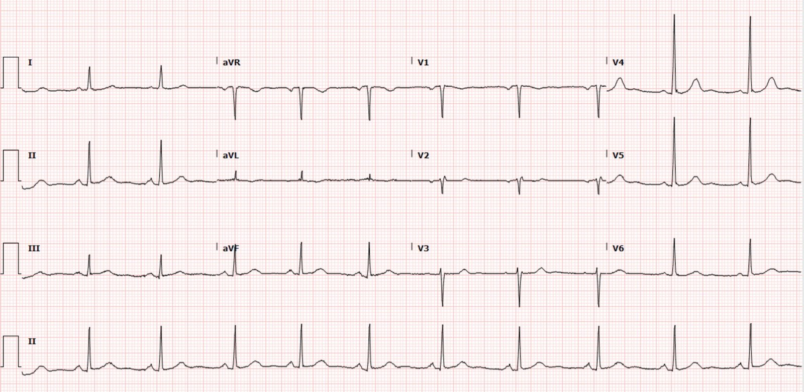
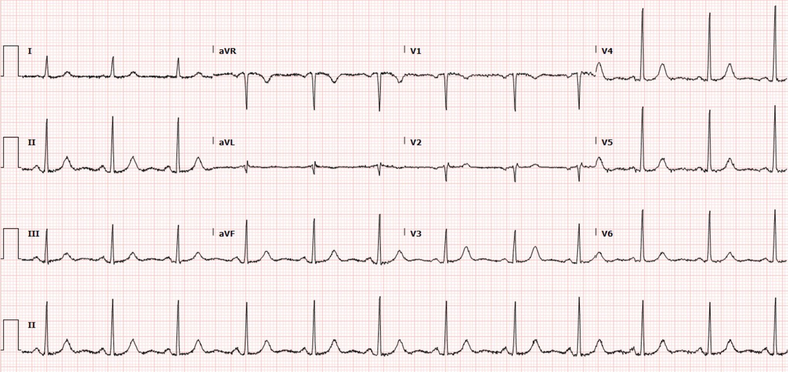
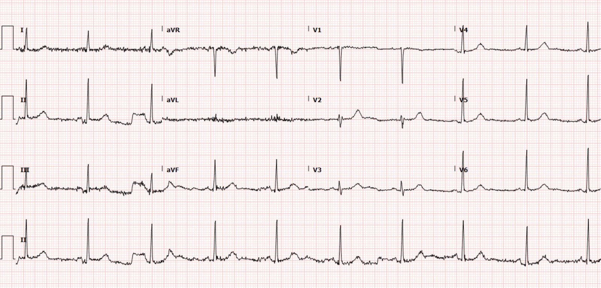
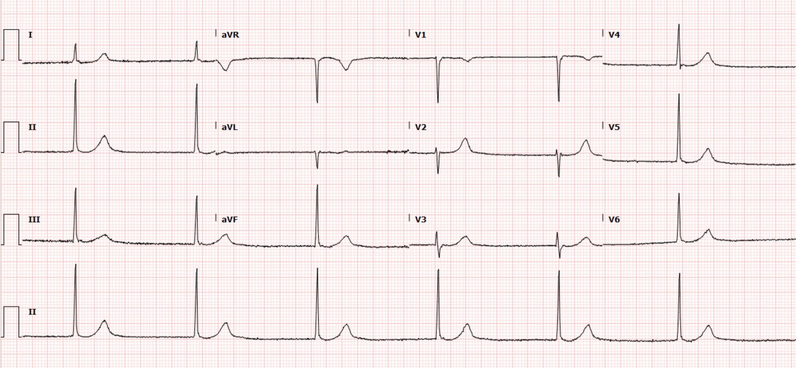
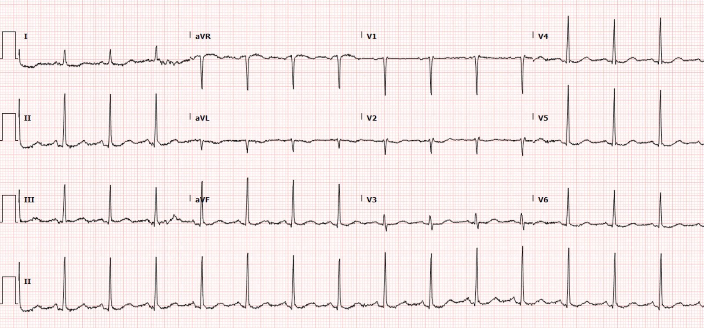
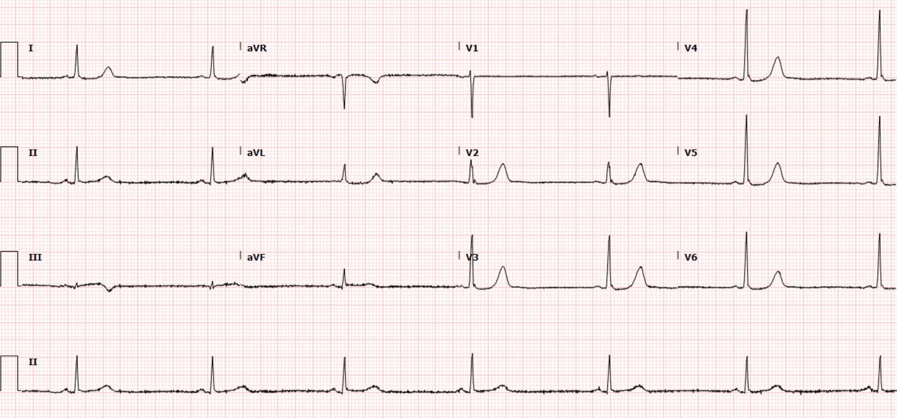
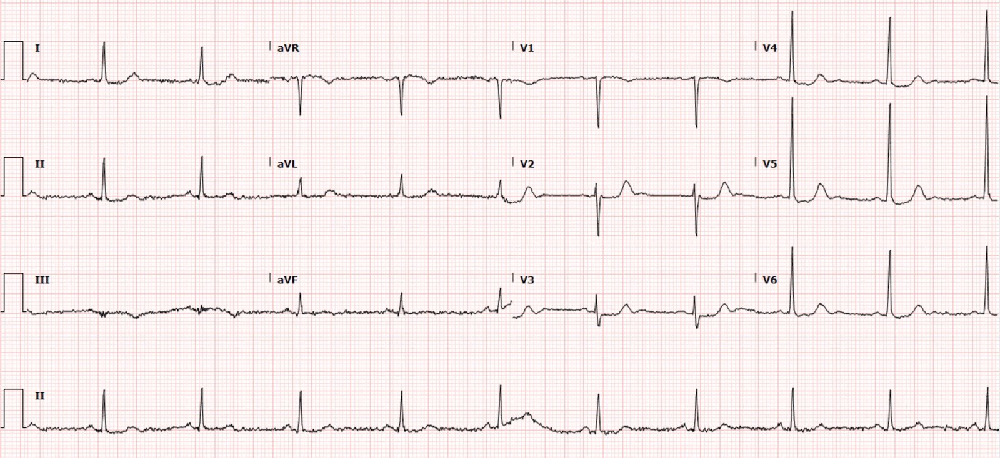

04/09/2021 — Một phụ nữ 76 tuổi bị ngất, choáng váng, hồi hộp đánh trống ngực tái diễn và nghiệm pháp gắng sức âm tính
Bản dịch tiếng Việt của bài "A 76 Year Old Female With Recurrent Syncope, Lightheadedness, Palpitations and Negative Stress Test" – Dr. Smith’s ECG Blog. Giữ nguyên toàn bộ 7 hình ảnh của bản gốc.
Tác giả: Lucas Goss MD, bình duyệt bởi Meyers, Smith, Bracey
Một phụ nữ 76 tuổi có tiền sử rung nhĩ không dùng thuốc chống đông, bệnh động mạch vành (CAD) không tắc nghẽn phát hiện trên chụp CT mạch vành (coronary CTA) 2 năm trước, tăng huyết áp (HTN),
rối loạn lipid máu (HLD), choáng váng tái diễn và ngất, đã được đặt máy ghi vòng lặp (loop recorder), nay đến viện vì một đợt nữa cảm thấy choáng váng, vã mồ hôi và
cảm giác như bà “sắp chết.” Bà vừa được cho ra viện chỉ một ngày trước đó, sau
lần nằm viện thứ hai vì các đợt tương tự. Thực ra bà đang ở hiệu thuốc để lấy thuốc vào ngày hôm sau khi ra viện thì đợt này xảy ra, và nhân viên hiệu thuốc đã cho bà ngồi xuống ghế trong lúc chờ xe cấp cứu. Các triệu chứng của bà gần như đã hết vào lúc đến viện.
Dấu hiệu sinh tồn lúc đến viện: HA 143/89, tần số tim 63, nhịp thở
18.
Trong các lần nằm viện gần đây, bà có
chụp CT mạch phổi (CTPA) âm tính, nghiệm pháp gắng sức hạt nhân âm tính, siêu âm tim bình thường, và máy ghi vòng
lặp không phát hiện dấu hiệu đáng lo ngại nào khi được kiểm tra. Trong lần thứ nhất của hai lần nằm viện gần đây vì triệu chứng tương tự, troponin I của bà tăng từ mức không phát hiện được lên 219 ng/L rồi giảm trở lại, và bệnh án dường như quy điều này cho huyết áp của bà, lúc đó ở khoảng 200/110. Trong lần nằm viện thứ hai (lần mà bà vừa mới ra viện hôm qua), bà được làm nhiều lần troponin, tất cả đều không phát hiện được, dưới 6 ng/L.
Một lưu ý về máy ghi vòng lặp (Loop Recorder), xin cảm ơn bác sĩ điện sinh lý của chúng tôi:
Máy chỉ ghi lại nếu:
1. Tần số tim đạt tiêu chí đã lập trình (ví dụ: khoảng ngưng trên 3 giây,
tần số tim <30 nhịp/phút, tần số tim >*** v.v.). Hiếm khi người ta lập trình “ngưỡng
kích hoạt ghi tự động là tần số tim 50 hay 40.
2. Bệnh nhân tự kích hoạt ghi khi có triệu chứng. Trong những
tình huống đó máy ghi lại một vòng lặp vài phút trước và khoảng một phút
sau (thay đổi tùy hãng sản xuất).
Vì vậy, nếu bệnh nhân không kích hoạt ghi khi có
triệu chứng, thì thường người ta không lập trình ghi tự động với tần số tim
ở mức 40 hay 50, vì nếu không bộ nhớ sẽ đầy và sẽ có
rất nhiều bản ghi bị ghi đè.
Bình luận của Smith về troponin: định nghĩa nhồi máu cơ tim gồm 2 trong các điều sau:
1. Troponin tăng và/hoặc giảm với ít nhất một giá trị trên bách phân vị thứ 99 của khoảng tham chiếu
2. Cộng với một hoặc nhiều điều sau: A. Triệu chứng của nhồi máu cơ tim; B. Bằng chứng thiếu máu cục bộ trên điện tâm đồ; C. Xuất hiện sóng Q bệnh lý; D. Bằng chứng hình ảnh học về mất mới cơ tim còn sống hoặc rối loạn vận động thành khu trú mới theo kiểu phù hợp với nguyên nhân thiếu máu cục bộ; E. • Phát hiện huyết khối mạch vành qua chụp mạch hoặc khám nghiệm tử thi (không áp dụng cho nhồi máu cơ tim típ 2 hoặc típ 3).
Bệnh nhân này có 1. và 2A., vì vậy bà đã bị nhồi máu cơ tim.
Bây giờ cần quyết định đây là loại nhồi máu cơ tim cấp nào (thường là típ 1 hoặc típ 2). Nếu là nhồi máu cơ tim típ 2, phải tìm ra nguyên nhân gây mất cân bằng cung-cầu, hoặc xác định bóc tách hay co thắt động mạch vành hoặc một vài bệnh lý khác. Ngất là hậu quả của mất tưới máu não tạm thời, và có nhiều nguyên nhân, tất cả đều xấu. Phải tìm ra nguyên nhân. Nhiều khả năng hơn, đây là nhồi máu cơ tim típ 1 và bệnh nhân cần chụp mạch vành bất kể dấu hiệu trên điện tâm đồ thế nào.
Đây là điện tâm đồ của bà lúc đến viện (không có triệu chứng):
Điện tâm đồ
ban đầu #1: (1159)


Điện tâm đồ 2 ngày trước đó (không phải “điện tâm đồ nền,” ghi trong lần nhập viện trước):


Diễn giảiban đầu:
Nhịp xoang, QRS bình thường, không có dấu hiệu rõ ràng
của thiếu máu cục bộ, không có dấu hiệu tăng kali máu, QT bình thường.
Ghi chú của Meyers: Tôi đã đọc điện tâm đồ này trong thời gian thực, so sánh với bản trước, và không thấy dấu hiệu rõ ràng nào của thiếu máu cục bộ hay OMI. Nhìn lại, tôi nghĩ có lẽ sóng T đảo ngược (TWI) ở aVL bất thường hơn một chút, và đoạn ST cùng sóng T ở V3 bị “đẩy xuống” hơn một chút so với điện tâm đồ 2 ngày trước, nhưng với tôi vẫn chưa có tính chẩn đoán.
Ca bệnhtiếp diễn
Xét nghiệm cho thấy công thức máu (CBC) và sinh hóa cơ bản (BMP) không có gì đáng chú ý,
tuy nhiên troponin I độ nhạy cao (HS troponin I) lấy ở khu phân loại (triage) tăng nhẹ ở mức 23
ng/L. Xét nghiệm lặp lại được lấy sau khi bà được bác sĩ khám lúc 1700 và đã
tăng lên 138 ng/L. Một lần nữa, sự kết hợp troponin tăng và giảm cùng với triệu chứng có giá trị chẩn đoán nhồi máu cơ tim cấp.
Điện tâm đồ #2:
(1707)


Có trôi đường nền và nhiễu ở các chuyển đạo then chốt như II, III, aVF và aVL, nơi có lẽ có ST chênh lên (STE) mới và sóng T to lên ở các chuyển đạo thành dưới, kèm thay đổi soi gương nhẹ ở aVL.
Lẽ ra phải ghi lại điện tâm đồ ngay để khẳng định hay bác bỏ nghi ngờ này, nhưng có vẻ lúc đó đã không ghi lại.
Khoa tim mạch được mời hội chẩn để nhập viện và
chụp hình mạch vành xác định. Họ đã nhận bệnh nhân, tuy nhiên trong lúc bà
đang chờ giường ở khoa phòng, bà bị tụt huyết áp và nhịp chậm.
Điện tâm đồ #3: (1834)


Điện tâm đồ ghi lại này cho thấy nhịp thoát bộ nối với tần số 36, tuy nhiên không có dấu hiệu OMI xác định. Vào
thời điểm này bệnh nhân trông có vẻ bệnh nặng, choáng váng và vã mồ hôi. Huyết
áp của bà là 80/40. Bà được tiêm 0.5mg atropine trong khi đang dán miếng
dán tạo nhịp và ngay sau đó nhịp bộ nối hết, kèm cải thiện
huyết áp và triệu chứng:
Điện tâm đồ #4: (1851)


Trên điện tâm đồ ghi lại, bà nay đã trở về nhịp xoang. Có thể có một gợi ý cực nhỏ của ST chênh lên ở chuyển đạo III, và aVL cho thấy một chút xíu ST chênh xuống (STD) soi gương cùng sóng T âm tăng kích thước. Có một lượng nhỏ ST chênh xuống soi gương ở I, và có một mức ST chênh xuống hầu như không nhận thấy được ở V2 và V3 so với bản trước. Các dấu hiệu này đều rất đáng nghi ngờ OMI thành dưới-sau.
Điều thú vị là máy ghi vòng lặp của bà lại được kiểm tra lần nữa và
không phát hiện được biến cố này.
Bà được nhập khoa tim mạch với kế hoạch
thông tim không cấp cứu vào ngày hôm sau, đồng thời đánh giá điện sinh lý (EP) về khả năng rối loạn chức năng
nút xoang.
Trong đêm, troponin của bà tăng từ 23 lên 138, lên 390, lên 668, lên 1,000, rồi lên 1,219, sau đó người ta ngừng đo lúc 2 giờ sáng (rõ ràng là đằng nào chúng ta cũng quyết tâm phớt lờ chúng, vậy thì đánh thức chúng ta dậy vì chúng làm gì?!).
Trong khi chờ thông tim, một điện tâm đồ được
ghi do triệu chứng xấu đi:
Điện tâm đồ #5 (Ngày nằm viện thứ 2)


Điện tâm đồ này cho thấy nhịp chậm xoang kèm dấu hiệu tái tưới máu thành dưới-sau. Các chuyển đạo III và aVL có giá trị chẩn đoán nhồi máu cơ tim cấp, nhưng do có sóng T đảo ngược, nhiều khả năng là với động mạch đã thông (hoặc có tuần hoàn bàng hệ). Có một ít ST chênh lên ở các chuyển đạo thành dưới, nối tiếp vào sóng T có phần cuối đảo ngược, và hình ảnh này được phản chiếu soi gương ở aVL. Có sóng T tái tưới máu thành sau ở các chuyển đạo trước tim, cao hơn nhiều so với điện tâm đồ gần nhất.
Một điện tâm đồ khác được ghi lại vài giờ
sau đó (ngay trước khi thông tim):
Điện tâm đồ #6 (Ngày nằm viện thứ 2)


Điện tâm đồ này hơi khó hiểu về tình trạng của mạch máu, vì có ST chênh xuống mới nặng lên, tối đa ở V2-V4, nhưng vẫn còn sóng T đảo ngược phần cuối ở các chuyển đạo thành dưới. Tôi sẽ giả định là thiếu máu cục bộ vẫn đang diễn ra cho đến khi chứng minh được điều ngược lại.
Ghi chú của Smith: 3 khả năng:
1. Động mạch đã thông nhưng với dòng chảy TIMI-2, đủ để tưới máu các mạch cấp máu cho thành dưới, nhưng không đủ cho thành sau.
2. Dòng chảy TIMI-2 có thể đủ để gây sóng T đảo ngược (biểu hiện tái tưới máu) dù thiếu máu cục bộ vẫn đang diễn ra.
3. Có dòng chảy bàng hệ đủ mạnh để gây sóng T đảo ngược ở thành dưới, nhưng không ở thành sau.
Kết quảthông tim:
RCA: hẹp 100% do tổn thương được mô tả là
“phức tạp, không vôi hóa, phù hợp với bệnh xơ vữa động mạch, cùng với một
hình khuyết thuốc phù hợp với huyết khối”, cấp máu cho thành dưới và thành
sau, đã được đặt stent thành công.
LAD: Bờ lòng mạch không đều mức độ nhẹ
Động mạch mũ: Bờ lòng mạch không đều mức độ nhỏ
Sau đó bệnh nhân được cấy máy tạo nhịp hai
buồng do hội chứng suy nút xoang, vì bà tiếp tục trở lại
nhịp chậm bộ nối.
Điều thú vị ở ca này là
bà đã đến viện nhiều lần vì các triệu chứng tương tự tiến triển dần, nhưng đã có cả
nghiệm pháp gắng sức âm tính lẫn siêu âm tim trong vòng 2 tuần trước lần đến viện này.
Ngoài ra, sau đợt nhịp chậm bộ nối, máy ghi vòng lặp của bà đã được
kiểm tra và không phát hiện được biến cố này.
Điểm cần học#1: Nghiệm pháp gắng sức âm tính gần đây không loại trừ được ACS
Đừng dựa vào một nghiệm pháp gắng sức âm tính gần đây
để loại trừ hội chứng vành cấp hay các tổn thương mạch vành nguy cơ cao. Nghiệm pháp gắng sức không liên quan gì đến hội chứng vành CẤP. Về danh nghĩa, nghiệm pháp gắng sức được thiết kế để giúp phát hiện bệnh mạch vành mạn tính, ổn định, có triệu chứng, với hy vọng rằng các triệu chứng khi gắng sức mạn tính ổn định của bệnh nhân có thể được quy cho bệnh mạch vành ổn định đó. Hội chứng vành cấp có thể phát sinh từ những tổn thương xơ vữa nhỏ, không ổn định, có thể
nứt vỡ và gây OMI. Những tổn thương này có thể không được phát hiện trên nghiệm pháp gắng sức (vì chúng chưa nứt vỡ và gây tắc!), như
trường hợp ở trên. Một số nghiên cứu đã cho thấy tỷ lệ cao đáng lo ngại
bệnh nhân bị nhồi máu cơ tim cấp dù có nghiệm pháp gắng sức âm tính
gần đây.1,2,3, 4 Công dụng được cho là của nghiệm pháp gắng sức là xác định các chỗ hẹp khít, mạn tính, làm giảm lưu lượng máu mạch vành và tái tạo các triệu chứng đau thắt ngực ổn định của bệnh nhân. Các tổn thương mạch vành không đủ
đáng kể để phát hiện được trên nghiệm pháp gắng sức vẫn có thể bị nứt vỡ mảng xơ vữa và
hình thành huyết khối, gây nhồi máu cơ tim cấp.
Xem Chest Pain, “Negative” Stress Tests, POCUS,
& ECG Equations — A Case from Salim Rezaie (R.E.B.E.L. EM) (Đau ngực, nghiệm pháp gắng sức “âm tính”, POCUS và các phương trình điện tâm đồ — một ca bệnh của Salim Rezaie)
Điểm cần học#2
Cần nhận ra được sóng T tái tưới máu thành sau
như minh họa ở đây, với sóng T dương to, cao, kèm
ST chênh xuống kín đáo.
Xem Series of Prehospital ECGs Showing Reperfusion (Loạt điện tâm đồ trước viện cho thấy tái tưới máu)
A woman in her 70s with bradycardia and hypotension (Một phụ nữ bảy mươi mấy tuổi bị nhịp chậm và tụt huyết áp)
Tài liệu tham khảo về đánh giá bệnh nhân tại khoa cấp cứu (ED) có nghiệm pháp gắng sức âm tính gần đây:
- Walker J
và cs. Coronary disease in Emergency Department Chest Pain Patients with
Recent Negative Stress Testing. West J Emerg Med 2010. PMID: 21079714 - Hoilund-Carlsen
PF và cs. Usefulness of the Exercise Electrocardiogram in Diagnosing
Ischemic or Coronary Heart Disease in Patients with Chest Pain. Am J
Cardiol 2005. PMID: 15619400 - Smith SW và cs. Incidence of Myocardial
Infarction in Emergency Department Chest Pain Patients with a Recent
Negative Stress Imaging Test. Acad Emerg Med 2005.; 12:51 - Engineer RS, Lauer MS, Emerman CL. Chest pain after recent stress test: Is there a warranty? Ann Emerg Med [Internet] 2004;44(4, Supplement):S47. Truy cập tại: https://www.sciencedirect.com/science/article/pii/S0196064404008765